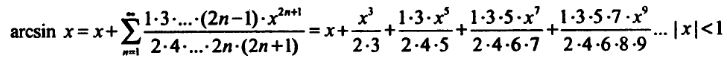

Вид экрана
Вид экрана
Вид экрана
Вид экрана
Вид экрана
Вид экрана
Вид экрана

Вид экрана
Вид экрана

Вид экрана
Вид экрана
Вид экрана
Вид экрана
Вид экрана
Вид экрана

Вид экрана
Вид экрана
Вид экрана
Вид экрана
Вид экрана
Вычислить и вывести на экран в виде таблицы значения функции, заданной с помощью ряда Тейлора, на интервале от Хнач до Хкон с шагом dx с точностью e.
Точность считать достигнутой, если модуль очередного члена ряда меньшe е.
Таблицу снабдить заголовком и шапкой. Каждая строка таблицы должна содержать значение аргумента, значение функции, значение функции, вычисленное с помощью ряда, количество просуммированных членов ряда. Значения Хнач, Хкон, dx, е вводить с клавиатуры.
| Вариант 1 | Вид экрана |
Вариант 11 | Вид экрана |
| Вариант 2 | Вид экрана |
Вариант 12 | Вид экрана |
| Вариант 3 | Вид экрана |
Вариант 13 | Вид экрана |
| Вариант 4 | Вид экрана |
Вариант 14 | Вид экрана |
| Вариант 5 | Вид экрана |
Вариант 15 | Вид экрана |
| Вариант 6 | Вид экрана |
Вариант 16 | Вид экрана |
| Вариант 7 | Вид экрана |
Вариант 17 | Вид экрана |
| Вариант 8 | Вид экрана |
Вариант 18 | Вид экрана |
| Вариант 9 | Вид экрана |
Вариант 19 |  Вид экрана |
| Вариант 10 | Вид экрана |
Вариант 20 | Вид экрана |